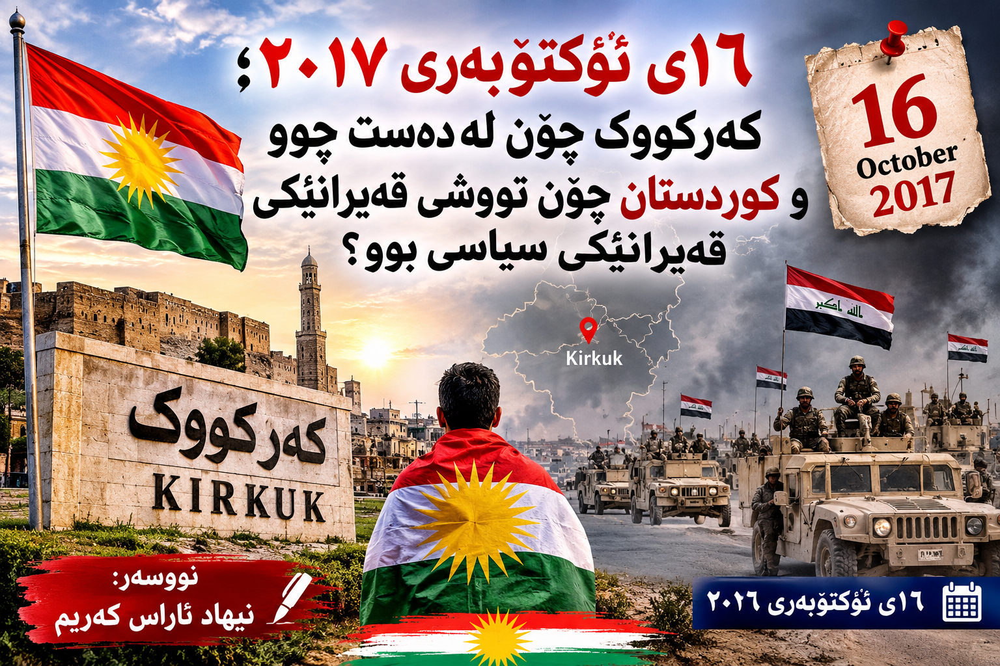

NIHAD
KAREEM
کوردی
EN
العربية
سەرەکی
وتارەکان
شیکردنەوەی سیاسی
← گەڕانەوە بۆ وتارەکان
شیکردنەوەی سیاسی
١٦ی ئۆکتۆبەری ٢٠١٧؛ کەرکووک چۆن لەدەست چوو و کوردستان چۆن تووشی قەیرانی سیاسی بوو؟
نووسەر: نیهاد ئاراس کەریم · ١٦ی ئۆکتۆبەری ٢٠٢٦

سەرچاوە و خوێندنەوەی زیاتر:
United Nations – Briefing on Iraq, 22 November 2017
Human Rights Watch – Iraq: Fighting in Disputed Territories Kills Civilians
Asian Affairs – Kurdistan’s Referendum: The Withdrawal of the Kurdish Forces in Kirkuk
KRG – Article 140 and Kirkuk, February 2026
NIHAD KAREEM — JOURNALISM · ANALYSIS · NEWS